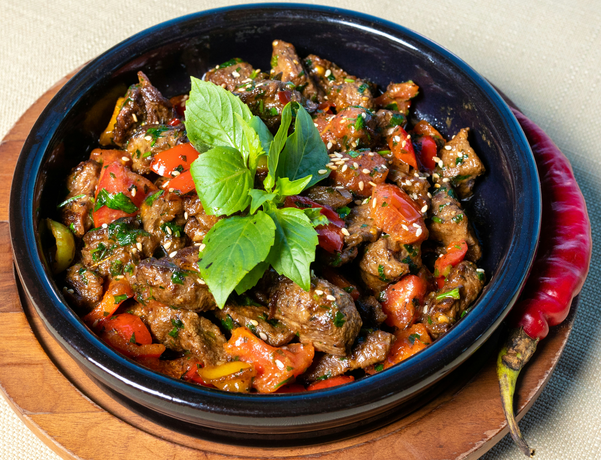

Spaghetti Carbonara

Description
Beef Stir-Fry with Vegetables is a quick and flavourful dish made with tender strips of beef, crisp vegetables and a savoury stir-fry sauce. The beef is cooked over high heat to keep it juicy, while the vegetables retain their crunch. Finished with a delicious garlic, ginger and soy-based sauce, this meal is perfect for serving with steamed rice or noodles.
Ingredients
- 500 g beef steak (sirloin or rump), thinly sliced
- 2 tbsp soy sauce
- 1 tbsp oyster sauce (optional)
- 1 tbsp cornstarch
- 2 tbsp vegetable oil
- 1 red bell pepper, sliced
- 1 yellow bell pepper, sliced
- 1 carrot, julienned
- 1 head broccoli, cut into florets
- 1 onion, sliced
- 3 cloves garlic, minced
- 1 tsp fresh ginger, grated
- 2 tbsp honey or brown sugar
- 1/2 tsp black pepper
- Sesame seeds and spring onions for garnish
- Steamed rice or noodles, to serve
Steps
-
In a bowl, combine the sliced beef, 1 tablespoon soy sauce, cornstarch and black pepper. Mix well and let it marinate for 10–15 minutes.
-
Heat 1 tablespoon of vegetable oil in a wok or large pan over high heat. Stir-fry the beef for approximately 2–3 minutes until browned. Remove the beef from the pan and set aside.
-
Add the remaining oil to the pan. Sauté the onion, garlic and ginger for about 30 seconds. Add the carrots, broccoli and bell peppers. Stir-fry for 3–4 minutes until the vegetables are tender but still slightly crisp.
-
Return the beef to the pan. Add the remaining soy sauce, oyster sauce (if using) and honey or brown sugar. Toss everything together for 1–2 minutes until the sauce coats the beef and vegetables.
-
Garnish with sesame seeds and sliced spring onions. Serve hot with steamed rice or noodles.
Home